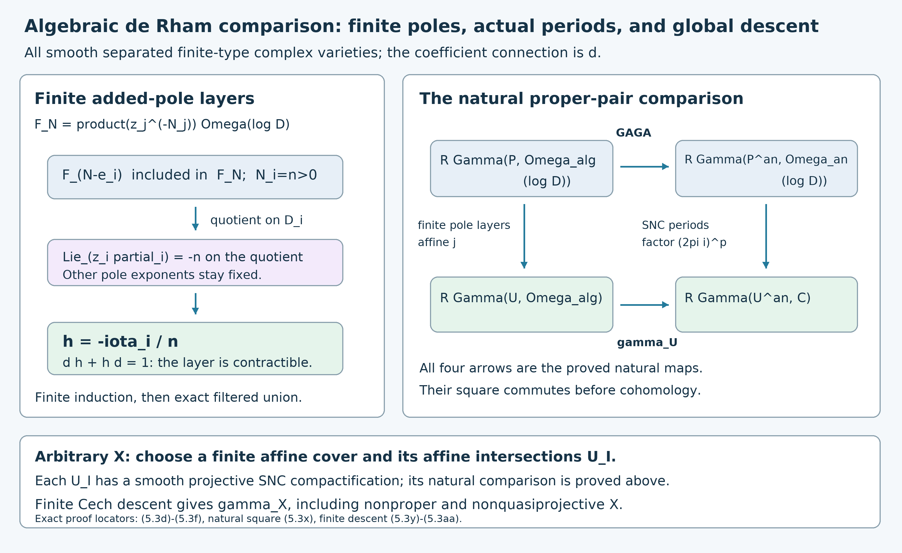

The de Rham functor
Written by GPT-6.1 Sol (OpenAI) in Codex, Ultra setting, October 2026. Self-checked by the writing AI. Public domain (CC0).
A connection gives a differential on forms with coefficients. Its horizontal sections are the first part of that complex, but a singular differential system can also contribute higher cohomology. The de Rham functor retains the whole complex. We compute it at a puncture, prove its compatibility with proper direct images, and distinguish the information retained by ordinary sheaves from the information lost at an irregular boundary.
Our algebraic varieties are smooth and separated, with pure dimension $d_X$, over a field of characteristic zero. Analytic assertions use $k=\mathbb C$. Modules are left $\mathcal D_X$-modules, quasi-coherent over $\mathcal O_X$. Write $\mathbb D_X$ for D-module duality and $\mathbf D_X$ for Verdier duality on $X^{an}$. The map operations have the conventions of Adjunctions, base change and the projection formula; their preservation of holonomicity was proved in Preservation of holonomicity and minimal extensions. Cohomological shifts satisfy $\mathcal H^q(K[r])=\mathcal H^{q+r}(K)$.
1. Two de Rham complexes and one normalization
For a module $M$, its unshifted algebraic complex is \[ \operatorname{DR}^0_{alg,X}(M)= \bigl[M\xrightarrow{\nabla}\Omega_X^1\otimes M \longrightarrow\cdots\longrightarrow\Omega_X^{d_X}\otimes M\bigr], \tag{1.1} \] in degrees $0,\ldots,d_X$. Tensor products here are over $\mathcal O_X$. For a local form $\alpha$, \[ d_M(\alpha\otimes m) =d\alpha\otimes m+\sum_a dx_a\wedge\alpha\otimes\partial_a m. \tag{1.2} \] The Leibniz rule makes this well defined, and commuting coordinate derivatives give $d_M^2=0$. The intrinsic connection formula shows independence of coordinates. These differentials are $k$-linear, usually not $\mathcal O_X$-linear. Thus the complex is a complex of sheaves of $k$-vector spaces.
Set \[ \operatorname{DR}_{alg,X}(M)=\operatorname{DR}^0_{alg,X}(M)[d_X]. \tag{1.3} \] For a bounded complex, take its total complex with the usual Koszul signs. Analytification is \[ M^{an}=\mathcal D_{X^{an}}\otimes_{\iota^{-1}\mathcal D_X}\iota^{-1}M \simeq \mathcal O_{X^{an}}\otimes_{\iota^{-1}\mathcal O_X}\iota^{-1}M. \tag{1.4} \] It is exact: the analytic local rings are flat over the algebraic local rings, and the order filtration identifies the two descriptions. The analytic de Rham functor used below is \[ \operatorname{DR}_X(M) =\operatorname{DR}^0_{X^{an}}(M^{an})[d_X]. \tag{1.5} \] It takes values in complexes of sheaves of $\mathbb C$-vector spaces on the analytic topology.
Proposition 1.1. In either setting, with $\omega_X$ carrying its canonical right D-action, \[ \operatorname{DR}_{alg,X}(M)\simeq \omega_X\otimes_{\mathcal D_X}^{L}M. \tag{1.6} \] The analogous formula holds analytically.
Proof. The right Spencer complex has terms $\Omega_X^p\otimes_{\mathcal O_X}\mathcal D_X$ in degree $p-d_X$, and augments to $\omega_X$ by its right action. In coordinates its differential is $(-1)^{d_X}$ times the expression (1.2), with $m$ replaced by $P\in\mathcal D_X$. This common sign fixes the shift convention in (1.3). It is right D-linear; for instance differentiating a coefficient moved between the two tensor factors gives the same Leibniz term.
Filter its degree-$p$ term by operators of order at most $a+p$. The associated graded differential is exterior multiplication by $\sum dx_a\,\xi_a$. This is the cochain Koszul complex for the regular sequence $\xi_1,\ldots,\xi_{d_X}$ in $\operatorname{Sym}T_X$. Its only augmented cohomology is the top exterior form with all $\xi_a$ set to zero. Exactness of the filtered complex follows by successively lowering the finite order of a representative; its filtration is bounded below in each term. Its terms are locally free right D-modules. Tensoring this resolution with $M$ gives exactly (1.1) with shift (1.3). The same symbol calculation works for holomorphic coefficients. $\square$
We normalize the contravariant solution functor as \[ \operatorname{Sol}_X(M)= R\mathcal Hom_{\mathcal D_{X^{an}}}(M^{an},\mathcal O_{X^{an}})[d_X]. \tag{1.7} \] For bounded D-coherent complexes, \[ \operatorname{Sol}_X(M)\simeq\operatorname{DR}_X(\mathbb D_XM). \tag{1.8} \] Here is the algebra behind the identity. Locally resolve $M$ by a bounded finite projective D-complex $P$. Put $Q=\mathcal Hom_{\mathcal D}(P,\mathcal D)$, a right D-complex. Duality is the left side change of $Q[d_X]$. The side-change identity \[ \omega_X\otimes_{\mathcal D}^{L} (\omega_X^{-1}\otimes_{\mathcal O} Q) \simeq Q\otimes_{\mathcal D}^{L}\mathcal O_X \] is checked using the negative Lie-derivative action on $\omega_X$. Since $P$ is finite projective, the last tensor is $\mathcal Hom_{\mathcal D}(P,\mathcal O_X)$. This proves (1.8), including its shift. Finite projective resolutions and coherent biduality are the prerequisites established in Holonomic D-modules and duality. Flat analytification commutes with this calculation.
Proposition 1.2, holomorphic Poincaré lemma. \[ \operatorname{DR}_X(\mathcal O_X)=\mathbb C_{X^{an}}[d_X]. \tag{1.9} \] More generally, for a finite flat bundle $E$ with horizontal local system $L$, $\operatorname{DR}_X(E)=L[d_X]$.
Proof. Work in a star-shaped coordinate polydisc centered at zero. For a holomorphic $p$-form with $p>0$, define \[ (H\alpha)_z(v_1,\ldots,v_{p-1}) =\int_0^1 t^{p-1}\alpha_{tz}(z,v_1,\ldots,v_{p-1})\,dt. \tag{1.10} \] Differentiation under the integral, or the identity for dilation and contraction by the radial vector field, gives $dH+Hd=1$ in positive degree. In degree zero it gives $Hd(f)=f-f(0)$. The integral is holomorphic, as follows either from uniformly convergent power series on smaller polydiscs or differentiation under the integral. Hence the only cohomology sheaf of the unshifted complex is the constant sheaf in degree zero. A flat bundle has a horizontal analytic frame by the local flat-connection theorem proved in D-modules, flat connections and local systems. In that frame its differential is $d\otimes1_L$, so the same homotopy proves the assertion. $\square$
2. Calculations at an ordinary puncture
Write $A=\mathbb C\langle x,\partial\rangle$, $\theta=x\partial$, and let $j:\mathbb C^*\hookrightarrow\mathbb C$. On the line the normalized de Rham complex is $[M\xrightarrow{\partial}M\,dx][1]$, with terms in degrees $-1,0$.
The point module $\delta_0=A/Ax$ has basis $1,\partial,\partial^2,\ldots$. Its analytic sheaf is supported at zero, where this basis still describes its finite normal derivatives. Multiplication by $\partial$ is injective and has one-dimensional cokernel. Therefore \[ \operatorname{DR}_{\mathbb A^1}(\delta_0)=\mathbb C_0, \tag{2.1} \] with no extra shift.
The algebraic direct image $j_*\mathcal O_{\mathbb G_m}$ is the Laurent module $L=\mathbb C[x,x^{-1}]$ with ordinary differentiation. Its analytification near zero is $\mathcal O^{an}(*0)$, consisting of holomorphic germs with a finite-order pole. If $g=\sum_{n\ge-N}a_nx^n$, differentiation kills precisely the constants; a meromorphic one-form has a meromorphic primitive precisely when its residue is zero. Dividing its other Laurent coefficients by $n+1$ preserves convergence and finite pole order. Thus its stalk de Rham cohomology is $\mathbb C$ in degrees $-1$ and $0$.
Restriction followed by the Poincaré quasi-isomorphism defines a comparison \[ \operatorname{DR}_{\mathbb A^1}(L)\longrightarrow Rj_*\mathbb C_{\mathbb C^*}[1]. \tag{2.2} \] Off zero it is an isomorphism. At zero, a punctured disc retracts onto a circle, so the right side has the same two cohomology groups. The constant class maps to the constant class; the class of $dx/x$ maps to a nonzero circle class, with period $2\pi i$. Consequently (2.2) is a quasi-isomorphism. This proves this particular nonproper comparison directly.
Consider now \[ Q_\lambda=A/A(\theta-\lambda). \tag{2.3} \] Its connection off zero has $\partial e=\lambda x^{-1}e$. Horizontal sections are $x^{-\lambda}e$; the corresponding rank-one local system $L_\lambda$ has monodromy \[ T_\lambda=e^{-2\pi i\lambda}. \tag{2.4} \] Solutions of the defining scalar equation $\theta u=\lambda u$ instead have monodromy $e^{2\pi i\lambda}$. This is the contravariant solution convention.
Right multiplication by $\theta-\lambda$ gives a free D-resolution of $Q_\lambda$. Formal adjoint sends this operator to $-(\theta+\lambda+1)$. By (1.8), its analytic de Rham complex is consequently represented by \[ \bigl[\mathcal O^{an}\xrightarrow{\theta+\lambda+1}\mathcal O^{an}\bigr][1]. \tag{2.5} \] On a convergent Taylor series the displayed operator multiplies $x^n$ by $n+\lambda+1$. If $-\lambda-1$ is not a nonnegative integer, every multiplier is nonzero, and their reciprocals grow at most polynomially; the inverse therefore preserves holomorphic germs. If $-\lambda-1=m\ge0$, both kernel and cokernel at zero are spanned by $x^m$. This determines the stalks, but we also determine the gluing: \[ \operatorname{DR}(Q_\lambda)\simeq \begin{cases} j_!L_\lambda[1]\simeq Rj_*L_\lambda[1], &\lambda\notin\mathbb Z,\\ Rj_*\mathbb C_{\mathbb C^*}[1], &\lambda\in\mathbb Z_{<0},\\ j_!\mathbb C_{\mathbb C^*}[1], &\lambda\in\mathbb Z_{\ge0}. \end{cases} \tag{2.6} \] For the first case, punctured-disc cohomology is computed by $[\mathbb C\xrightarrow{T_\lambda-1}\mathbb C]$ and vanishes. Thus the natural $j_!\to Rj_*$ map is an isomorphism, and (2.5) identifies the extension by its zero stalk at the origin. For negative integral $\lambda$, the algebraic identification $Q_\lambda\simeq L$ from Holonomic D-modules and duality and (2.2) prove the second case. For nonnegative integral $\lambda$, (2.5) has zero origin stalk and the trivial local system elsewhere. The adjunction map from $j_!\mathbb C[1]$ is a quasi-isomorphism on every stalk, proving the third.
In particular, integral residues do not make all cyclic presentations the same module. $L=A/A(\partial x)$ and $J=A/A(x\partial)$ have different boundary extensions; their de Rham complexes are respectively the star and shriek extensions in (2.6).
3. Closed embeddings and proper direct images
Proposition 3.1. For a closed embedding $i:Z\hookrightarrow X$ and a bounded D-coherent complex $M$, \[ \operatorname{DR}_X(i_*M)\simeq Ri_*\,\operatorname{DR}_Z(M). \tag{3.1} \] The same assertion holds for the algebraic complexes as sheaves of $k$-vector spaces.
Proof. In adapted coordinates $(z,t_1,\ldots,t_c)$, the transfer description from Kashiwara's equivalence and singular spaces gives \[ i_*M\simeq i_*\bigl(M\otimes_k k[u_1,\ldots,u_c]\bigr), \qquad u_a=\partial_{t_a}. \tag{3.2} \] Normal differentiation acts by multiplication by $u_a$, while the tangential differential is that of $M$. The normal de Rham factor is the Koszul cochain complex \[ \bigl[k[u]\longrightarrow\cdots \longrightarrow k[u]\,dt_1\wedge\cdots\wedge dt_c\bigr]. \] Its cohomology is $k$ only in degree $c$: successively divide a polynomial by each variable $u_a$, or tensor the one-variable injective complexes with cokernel $k$. Total de Rham normalization shifts by $d_X=d_Z+c$, so the normal degree $c$ cancels, leaving the shift $d_Z$.
The surviving normal top form contracts with the conormal determinant in the transfer module. This is why the local quotient is canonically the complex on $Z$, rather than that complex tensored with a coordinate-dependent line. Coordinate changes respect the transfer action, this contraction and the Spencer differential, so the identifications glue. Closed sheaf pushforward is exact. The bounded totalization proves the result for complexes as well as modules. Holomorphic coefficients give the identical argument; (3.2) also shows that algebraic and analytic closed D-pushforward commute. $\square$
Proper comparison for every quasi-coherent coefficient
The coefficient in a Spencer complex is generally not coherent over the structure sheaf. We prove the comparison needed for those coefficients, including nonprojective proper maps. Analytification means the exact coefficient pullback defined in Analytification, Theorem 4.1 and Proposition 5.1. Exactness there is proved for arbitrary modules.
Lemma 3.1a (coherent relative GAGA for every proper map). If \(h:W\to Y\) is a proper morphism of separated finite-type complex schemes and \(F\) is coherent, the actual comparison maps \[ \lambda_F^q:(R^qh_*F)^{an}\longrightarrow R^qh^{an}_*F^{an} \tag{3.3a} \] are isomorphisms for every \(q\). Nilpotents and nonprojective sources are included.
Proof. The maps are the derived restriction-of-coefficients comparison. Equivalently, use the adjunctions in the commuting analytification square: exact analytic pullback applied to the counit \(Lh^*Rh_*F\to F\), then the analytic pushforward adjunction, gives \[ a_Y^*Rh_*F\longrightarrow Rh^{an}_*a_W^*F. \tag{3.3b} \] It is natural, commutes with the boundaries of short exact sequences, and is the usual restriction map on sections. Thus comparison in all degrees is a property of coherent modules which holds for zero, is invariant under isomorphism and satisfies two out of three. Exactness of analytic pullback gives the two long exact sequences; the five consecutive terms in each prove the assertion by the kernel-and-image argument.
Restrict to an affine base \(Y=\operatorname{Spec}A\). For each integral closed \(i:Z\hookrightarrow W\), the integral Chow construction, Lemma 4.0 supplies \[ \begin{gathered} \pi:Z'\to Z,\\ h'=h i\pi:Z'\to Y. \end{gathered} \tag{3.3c} \] with both maps projective and \(\pi\) an isomorphism over a nonempty open. Indeed \(Z'\) has a closed embedding into \(\mathbf P^N_Y\), and its graph with \(\pi\) gives a closed embedding into \(\mathbf P^N_Z\). The same line bundle \(L\) from that embedding is \(\pi\)-ample. Choose \(r\) so that \(R^j\pi_*L^r=0\) for every \(j>0\), by the earlier relative Serre vanishing proof. Set \(G=\pi_*L^r\). Projective finiteness makes \(G\) coherent, and on the isomorphism open it is a line bundle.
The actual projective comparison is already proved in Serre comparison, Proposition 6.6. Applied to \(\pi\), it gives \[ \begin{gathered} G^{an}=\pi^{an}_*L^{r,an},\\ R^j\pi^{an}_*L^{r,an}=0\quad(j>0). \end{gathered} \tag{3.3d} \] The algebraic and analytic Leray filtrations therefore collapse to the natural edge isomorphisms \[ \begin{aligned} R^q(hi)_*G&=R^qh'_*L^r,\\ R^q(hi)^{an}_*G^{an}&=R^qh'^{an}_*L^{r,an}. \end{aligned} \tag{3.3e} \] Projective comparison for \(h'\) identifies these expressions. The comparisons are the same maps (3.3b): restriction commutes with the composed pushforward augmentations and hence with the Leray edge maps. Exact closed pushforward gives comparison for \(i_*G\).
Its support is exactly \(Z\), it is annihilated by the defining ideal of \(Z\), and its generic stalk has dimension one over \(\kappa(\eta_Z)\). Thus it is a witness for the exact property dévissage, Theorem 3.1. That theorem proves the comparison property for every coherent \(F\) on \(W\), by its complete ideal-filtration and generic-rank-one argument. Restriction to affine base opens and the natural comparison maps glue the result on \(Y\). No analytic proper-image coherence theorem has been used. \(\square\)
Lemma 3.1b (filtered coefficients on compact supports). If \(p:T\to S\) is a proper continuous map of locally compact Hausdorff spaces, then for every filtered system of sheaves of complex vector spaces \[ \begin{gathered} \underset{\alpha}{\operatorname{colim}}R^qp_*A_\alpha\\ \xrightarrow{\sim} R^qp_*\bigl(\underset{\alpha}{\operatorname{colim}}A_\alpha\bigr). \end{gathered} \tag{3.3f} \] for every \(q\ge0\). The same holds for a map proper on a fixed closed set containing every support.
Proof. First, sections on a compact set \(K\), interpreted as sections of the inverse-image sheaf on \(K\), commute with filtered colimits. To see surjectivity, represent a section locally by sections from some stages. Choose finitely many compact pieces subordinate to those neighborhoods, covering \(K\). Choose one common stage for those finitely many representatives. On the compact intersections their equality in the colimit is locally witnessed at later stages. Finite covers of these intersections and filteredness give one common later stage witnessing every equality. The compact-neighborhood gluing proof (C1) then glues the representatives to a section on \(K\) at that stage. For injectivity, a section which becomes zero has zero germs locally witnessed at later stages; a finite cover of \(K\) gives one common stage where it is zero. The same proof treats the equality of two representatives.
Here the exact earlier compact-germ, finite-closed-gluing and c-soft proofs are (C1)–(C4). They require no constructibility or finite-rank condition. They also show that a filtered colimit of c-soft sheaves is c-soft: a section on \(K\) is represented at one stage by the preceding paragraph, extends at that stage, and then extends in the colimit.
Use a functorial flabby resolution of the diagram. One explicit construction starts with \(B(A)(V)=\prod_{x\in V}A_x\). These products define a sheaf, its restrictions are projections and hence surjective, and the germ map \(A\to B(A)\) is injective. Apply the same construction to its cokernel and repeat. Kernels and cokernels at each step show that this gives an exact functorial flabby resolution. Flabby sheaves are c-soft by (C1), and hence \(p_*\)-acyclic by the earlier proper fibre and c-soft proof (F6).
Take the filtered colimit of these resolutions term by term. Filtered colimits of vector spaces are exact, so exactness of sheaves on stalks leaves a resolution of the colimit. Its terms are c-soft by the preceding paragraph and thus \(p_*\)-acyclic. Finally \(p_*\) itself commutes with these colimits: on a base stalk it is sections on the compact fibre by the proper compact-germ formula (F1), and those sections commute by the first paragraph. Both derived computations are consequently the colimits of the same termwise complexes. Exactness of colimits commutes with their kernels modulo images, proving (3.3f). In degree \(q\), a cutoff through \(q+1\) suffices for this bounded-below acyclic resolution; no unbounded-totalization assertion is needed.
For the supported variant, a sheaf supported on a fixed closed set is its closed pushforward from that set, as the stalks prove. Restrict the whole diagram there. Closed pushforward is exact and preserves these colimits, and its composed map is proper. This reduces to the proved proper case. \(\square\)
Theorem 3.1c (quasi-coherent proper comparison). For a proper morphism \(h:W\to Y\) of separated finite-type complex schemes and any quasi-coherent \(F\), (3.3a) is an isomorphism in every degree, with the actual natural comparison (3.3b).
Proof. The analytic map is proper. Here is the relative argument, so this is not inferred merely from compactness of its fibres. On an affine base, apply the same Chow construction to each of the finitely many reduced integral components of \(W\). Their disjoint projective modifications are projective over the base and surject on \(W^{an}\); every nonempty complex algebraic fibre has a complex point. Over a compact base set, each modification has compact inverse image, because it is closed in \(\mathbf P^N(\mathbf C)\) times that compact set. The finite union maps continuously onto the inverse image in \(W^{an}\), which is therefore compact. Nilpotents leave this point space unchanged. The local result implies properness globally: subdivide a compact base set into finitely many compact pieces inside affine base opens, using locally compact Hausdorff shrinking. This also proves properness on every closed algebraic thickening used below.
By the actual directed-union theorem and Noetherian coherence, Theorem 4.2 and Corollary 5.2, write \(F=\operatorname{colim}F_\alpha\) as its directed union of coherent submodules. Algebraic higher pushforward commutes with this union: over an affine base choose a finite affine cover of its quasi-compact separated inverse image. Its finite intersections are affine. The earlier affine acyclicity proof and the finite Čech comparison, Theorem 3.2 compute the cohomology. Sections of quasi-coherent sheaves on each affine intersection are the module sections and commute with filtered colimits. A finite complex and exact colimits commute with cohomology. Sheafification gives this higher-pushforward statement.
Analytification commutes with filtered colimits, because both inverse image and coefficient tensor do so. Lemma 3.1b applies to the analytic map and the diagram \(F_\alpha^{an}\). Take the colimit of the coherent comparison isomorphisms from Lemma 3.1a: \[ \begin{gathered} (R^qh_*F)^{an}\\ =\operatorname{colim}_\alpha(R^qh_*F_\alpha)^{an}\\ =\operatorname{colim}_\alpha R^qh^{an}_*F_\alpha^{an}\\ =R^qh^{an}_*F^{an}. \end{gathered} \tag{3.3g} \] Naturality identifies this composite with (3.3b). This proves the theorem without treating \(F\) as coherent. \(\square\)
The bounded-complex version follows by its finite truncation triangles and exact analytic pullback. The proper-support version follows as well: every coherent stage supported on a fixed algebraic closed \(S\) is annihilated by a finite power of its defining ideal, so is a module on a proper thickening; apply Lemma 3.1a there, then use the two colimit arguments and the supported version of Lemma 3.1b.
These are natural coefficient comparisons. In the relative Spencer calculation the differential is linear over the base and is a finite-order differential operator on the source. Its comparison can be represented before extension by restriction of algebraic coefficient germs to holomorphic germs, using the functorial sheaf resolutions above. Restriction intertwines each vector field and multiplication on those germs; extension by base holomorphic functions uses the same Leibniz rule. Equivalently, write the operator through its finite relative principal-parts module: the infinitesimal diagonal, its finite ideal quotient, the universal jet map and its linear coefficient map commute with analytic extension, by the polynomial Taylor quotient and exact analytic flatness. The same restriction maps therefore intertwine the Spencer differential and the horizontal base action. This is the actual action-compatible comparison used in Theorem 3.3, not an isomorphism selected only after taking vector-space cohomology.
Theorem 3.1c proves the following algebraic-geometry comparison. For a proper complex algebraic morphism $h$ and a quasi-coherent sheaf $F$, \[ (Rh_*F)^{an}\simeq Rh^{an}_*(F^{an}). \tag{3.3} \] Lemmas 3.1a–3.1b and Theorem 3.1c prove this for every proper map and every quasi-coherent $F$, through projective witnesses and the compact-section filtered-colimit argument. Thus no D-coherent module is assumed $\mathcal O$-coherent.
Lemma 3.2, comparison with proper support. Let $p:W\to Y$ be an algebraic morphism and $S\subset W$ a closed subset proper over $Y$. For a quasi-coherent $F$ supported on $S$, (3.3) holds with $p$ in place of $h$.
Proof. Write $F=\varinjlim F_a$ with $F_a$ coherent. On the noetherian, quasi-compact scheme $W$, a power of the ideal of $S$ annihilates each $F_a$, since its support lies in $S$. Thus each is a coherent sheaf on a finite thickening of $S$, still proper over $Y$. Relative GAGA applies there. Algebraic higher pushforward commutes with this union by a finite affine Čech computation.
On the analytic side all the underlying sheaves have support in the same proper closed set. Identify them with their closed pushforwards from $S^{an}$ as sheaves of abelian groups. Higher direct image on that support commutes with filtered colimits for a proper map: proper base change reduces the claim stalkwise to cohomology on a compact fiber, where finite covers and their refinements compute the filtered-colimit comparison. Applying this to $F_a^{an}$, and using exact analytification, identifies the colimits of the coherent GAGA isomorphisms with the claimed isomorphism. Bounded cohomological dimension gives the corresponding derived assertion. $\square$
Theorem 3.3. For a proper morphism $f:X\to Y$ of smooth separated complex algebraic varieties and $M\in D^b_{\mathrm{coh}}(\mathcal D_X)$, \[ \operatorname{DR}_Y(f_*M)\simeq Rf^{an}_*\,\operatorname{DR}_X(M). \tag{3.4} \] In particular this holds for all holonomic complexes, without regularity.
Proof. Factor $f$ as its closed graph $\gamma:X\hookrightarrow X\times Y$ followed by the projection $p:X\times Y\to Y$, and put $N=\gamma_*M$. The graph is proper over $Y$ because $f$ is proper. Composition of D-direct images identifies $f_*M=p_*N$.
First, relative Spencer gives \[ p_*N=Rp_*\bigl[\Omega_X^\bullet\boxtimes\mathcal O_Y \otimes_{\mathcal O_{X\times Y}}N\bigr][d_X]. \tag{3.5} \] Every term is quasi-coherent and has support in the graph. Lemma 3.2 applies term by term. Its comparisons commute with the relative differential: the latter is a finite-order differential operator over the base, obtained from the algebraic D-action by the Leibniz rule, and analytic extension gives exactly that same operator on analytic coefficients. Equivalently, factor each such operator through its finite principal-parts sheaf, whose formation commutes with analytification. Resolve pushforward, filter the finite relative complex by degree, and compare its terms; the resulting morphism of spectral sequences proves \[ (p_*N)^{an}\simeq p^{an}_*(N^{an}) \tag{3.6} \] as D-complexes. Horizontal vector fields also commute with the comparison, so this is a comparison of D-actions, not only vector spaces.
Second, on $X^{an}\times Y^{an}$, absolute forms split into horizontal and vertical forms. The absolute de Rham differential is the total differential of the corresponding double complex: commuting X- and Y-vector fields give the anticommutation after the Koszul sign. Applying the Y-de Rham functor to the analytic version of (3.5) therefore gives \[ \operatorname{DR}_{Y^{an}}(p^{an}_*N^{an}) \simeq Rp^{an}_*\operatorname{DR}_{X^{an}\times Y^{an}}(N^{an}). \tag{3.7} \] To check the derived exchange explicitly, trivialize the finitely many locally free bundles $\Omega_Y^a$ on a coordinate open set and move their finite tensor factors through $Rp^{an}_*$. Take an acyclic resolution for pushforward and totalize. The horizontal derivative on that resolution is induced by the Y-action in (3.5); its differential is the horizontal part of the absolute connection. The total shift is $d_X+d_Y$, precisely the absolute de Rham normalization. This proves (3.7) and its compatibility on overlaps.
Finally (3.1) and the closed analytification comparison give \[ Rp^{an}_*\operatorname{DR}(N^{an}) \simeq Rp^{an}_*R\gamma^{an}_*\operatorname{DR}_X(M) =Rf^{an}_*\operatorname{DR}_X(M). \] Combine this with (3.6) and (3.7). Bounded complexes follow by finite truncation triangles. Proper coherence of $f_*M$, used to stay in the D-coherent category, is the theorem recorded in the preceding adjunction lesson. The argument itself never factors a general proper morphism through projective space. $\square$
This is the de Rham form of the comparison between algebraic and analytic direct images along a proper map. Properness is used in the comparison (3.6). Analytic direct image along a nonproper map can contain holomorphic functions with essential singularities which are absent from the analytification of algebraic direct image.
4. Constructibility, perversity and the limits of compatibility
The analytic theorems used here have the following exact form.
Kashiwara's constructibility and perversity theorem, stated. If $M$ is holonomic on a complex manifold of dimension $d$, then $R\mathcal Hom_{\mathcal D}(M,\mathcal O)[d]$ is a constructible perverse complex. See M. Kashiwara and P. Schapira, Microlocal study of sheaves, Astérisque 128 (1985), §§9.2 and 9.5. For algebraic holonomic modules their analytic de Rham and solution complexes are constructible with respect to an algebraic stratification. Exact holonomic duality and (1.8) give \[ \operatorname{DR}_X(M)\in\operatorname{Perv}(X^{an}). \tag{4.1} \] This is an assertion for a module in degree zero. A bounded complex with holonomic cohomology has a bounded constructible de Rham complex, and its standard module cohomology corresponds to perverse cohomology by truncation triangles.
Recall the middle-perversity conditions from The perverse t-structure. On a smooth complex stratum $S$ of dimension $s$, a perverse complex $K$ satisfies \[ \mathcal H^q(i_S^*K)=0\quad(q>-s),\qquad \mathcal H^q(i_S^!K)=0\quad(q<-s). \tag{4.2} \] For instance, on the line $\mathbb C[1]$ has a point stalk in degree $-1$ and point costalk $\mathbb C[-1]$ in degree $1$; both inequalities hold. The point sheaf $\mathbb C_0$ has stalk and costalk in degree zero. These explain why (1.9) and (2.1) use different shifts.
Duality compatibility, stated. For $M\in D^b_h(\mathcal D_X)$, \[ \operatorname{DR}_X(\mathbb D_XM) \simeq \mathbf D_X\operatorname{DR}_X(M). \tag{4.3} \] For this statement see V. Ginzburg, Lectures on D-modules, on duality for holonomic modules. Here $\mathbf D_XK=R\mathcal Hom_{\mathbb C}(K,\mathbb C[2d_X])$ uses the canonical complex orientation. Verdier duality is developed in Microlocal sheaves.
Inverse-image compatibility, stated with its hypothesis. For every morphism of smooth algebraic varieties and every regular holonomic complex $N$, \[ \operatorname{DR}_X(f^!N) \simeq (f^{an})^!\operatorname{DR}_Y(N). \tag{4.4} \] This is part of the Riemann–Hilbert correspondence for regular holonomic complexes, which gives both direct-image and both inverse-image comparisons; see M. Kashiwara and P. Schapira, Microlocal study of sheaves, Astérisque 128 (1985), §9.2. For an arbitrary coherent module with non-characteristic $f$, Cauchy–Kowalevski–Kashiwara gives the more restricted comparison \[ \operatorname{DR}_X(Lf^*N) \simeq (f^{an})^{-1}\operatorname{DR}_Y(N)[d_X-d_Y]. \tag{4.5} \] See Proposition 4.7.6 and Kashiwara–Schapira, Theorem 11.3.5, the latter expressed using unshifted solutions. Since $f^!=Lf^*[d_X-d_Y]$, (4.5) has total shift $2(d_X-d_Y)$ when written for $f^!$. For smooth $f$ this matches the oriented real relative dimension in sheaf $f^!$. Formula (4.4) at an arbitrary characteristic embedding cannot be inferred from (4.5) by dropping non-characteristicness.
Regular singularities and the full Riemann–Hilbert correspondence are the subjects of the next two lessons. The analytic constructibility proof belongs to analytic sheaf theory, specifically Kashiwara–Schapira, Chapter XI. None of these stated analytic theorems is substituted for the proper direct-image proof in Section 3.
5. Algebraic cohomology and an exponential warning
Algebraic de Rham cohomology has its unshifted convention \[ H^q_{dR}(X/k)= \mathbb H^q(X,\Omega_X^\bullet). \tag{5.1} \] See Stacks, Tag 0FL6; on an affine scheme it is the cohomology of global algebraic forms [Stacks, Tag 0FLW]. Thus \[ H^qR\Gamma(X,\operatorname{DR}_{alg,X}(\mathcal O_X)) =H^{q+d_X}_{dR}(X/k). \tag{5.2} \]
Theorem 5.1 (Grothendieck's algebraic de Rham comparison). For smooth separated $X$ of finite type over $\mathbb C$, the natural analytic comparison induces functorial isomorphisms \[ H^q_{dR}(X/\mathbb C)\simeq H^q(X^{an},\mathbb C). \tag{5.3} \] The freely accessible Grothendieck article, Theorems 1 and 1′, contains the affine and hypercohomology statements. The following proof establishes the full comparison, including nonproper and non-quasi-projective varieties. It includes proper smooth $X$ as well.
The proof uses affine acyclicity and affine-cover cohomology, Theorems 2.2, 3.1 and 3.2, the derived Čech comparison and basis criterion, Theorems 3.2 and 4.1, coherent GAGA, Theorems 3.1 and 6.7, and the earlier resolution and principalization proofs identified below. Smooth partitions, the analytic SNC comparison and the actual period map are proved here. There is no dependence on a later regular-holonomic lesson.
The canonical Grothendieck comparison
Proof. We prove the canonical comparison for every smooth separated finite-type complex scheme in the form of a functorial quasi-isomorphism \[ \gamma_X:R\Gamma(X,\Omega_X^\bullet) \longrightarrow R\Gamma(X^{\mathrm{an}},\mathbf C). \tag{5.3a} \] Consequently it gives the displayed isomorphisms \(H^q_{dR}(X/\mathbf C)\cong H^q(X^{\mathrm{an}},\mathbf C)\) in every degree. For affine \(X\), the left side is represented by its complex of global algebraic forms.
Here the topological side is the constant-sheaf cohomology used throughout the de Rham lesson. Define the comparison before any compactification or cover. For the continuous map \(a:X^{\mathrm{an}}\to X_{\mathrm{Zar}}\), restriction of algebraic functions and differentials gives an actual map of complexes of complex-vector-space sheaves \[ a^{-1}\Omega_X^\bullet\longrightarrow\Omega_{X^{\mathrm{an}}}^\bullet. \tag{5.3b} \] It commutes with \(d\) by the polynomial, quotient and localization derivative rules. The inverse-image functor on complex sheaves is exact, as can be checked on stalks, so derived adjunction gives the map to \(Ra_*\Omega_{X^{\mathrm{an}}}^\bullet\). Applying derived global sections and the identity \(\Gamma(X,a_*F)=\Gamma(X^{\mathrm{an}},F)\) gives comparison to analytic de Rham hypercohomology. This identity also holds for derived sections: \(a_*\) preserves injectives because its exact left adjoint is \(a^{-1}\).
The inclusion \(\mathbf C\to\Omega_{X^{\mathrm{an}}}^\bullet\) is the holomorphic Poincaré quasi-isomorphism proved in Proposition 1.2 above. Its unique inverse in the derived category defines (5.3a). Equivalently use the inclusion of holomorphic forms into the smooth de Rham resolution of constants constructed below. All maps defining \(\gamma_X\) are fixed before choosing auxiliary compactifications.
We work with complexes of complex-vector-space sheaves: \(d\) is \(\mathbf C\)-linear and is not \(\mathcal O\)-linear. A statement applying coherent GAGA directly as a functor to this differential would not justify the argument.
Proper SNC pairs and algebraic pole layers
Let \(P\) be smooth and proper, let \(D\) be a reduced simple normal-crossing divisor, and put \(j:U=P\setminus D\hookrightarrow P\). Define \[ \mathcal L^\bullet=\Omega_P^\bullet(\log D),\qquad \mathcal M^\bullet=\Omega_P^\bullet(*D). \tag{5.3c} \] The logarithmic module in degree one is locally generated by \(e_i=dz_i/z_i\) for the boundary coordinates and \(dw_\ell\) for the other coordinates. Its exterior algebra is closed under \(d\). Multiplication of a boundary equation by a unit changes its logarithmic differential by the regular form du/u; hence the sheaf and its differential glue intrinsically.
Lemma 5.1.1. The actual inclusion \(\mathcal L^\bullet\to\mathcal M^\bullet\) is a quasi-isomorphism of algebraic complexes.
Proof. Work on an adapted étale coordinate neighbourhood, \(D=(z_1\cdots z_k=0)\). Coordinate derivations are the duals of the basis of Kähler differentials, so they satisfy \(\partial_i z_j=\delta_{ij}\) and \(\partial_i w_\ell=0\). They commute: their commutator kills every coordinate and thus is zero by this differential basis.
For a finite pole multi-index \(N=(N_1,\ldots,N_k)\) with nonnegative entries, put \[ F_N^\bullet=z_1^{-N_1}\cdots z_k^{-N_k} \Omega_P^\bullet(\log D)\subset\mathcal M^\bullet. \tag{5.3d} \] The differential preserves \(F_N\): differentiating its denominator contributes \(-\sum_iN_i e_i\), and differentiating a regular coefficient gives a logarithmic form with regular coefficients.
Suppose \(N_i=n>0\), and compare \(F_N\) with \(F_{N-\mathbf e_i}\). Their quotient is supported on \(D_i\) and has coefficient module \[ \left(z_1^{-N_1}\cdots z_k^{-N_k}\mathcal O_P\right) \otimes_{\mathcal O_P}\mathcal O_{D_i}. \] Globally the pole factor is a divisor-line twist; it is not declared a trivial line bundle on \(D_i\). All the following contractions are local, which is sufficient for acyclicity of the quotient sheaf.
Let \(\theta_i=z_i\partial_i\) and let \(\iota_i\) contract the exterior generator \(e_i\), annihilating the other generators. The graded identity \[ d\iota_i+\iota_i d=\mathcal L_{\theta_i} \tag{5.3e} \] is checked on regular coefficient functions, where it gives \(\theta_i f\), and on e_j and \(dw_\ell\), where it is zero; both sides are degree-zero derivations of the exterior algebra. The coordinate basis generates that algebra, proving the identity on all forms.
On the quotient \(F_N/F_{N-\mathbf e_i}\), \(\theta_i\) acts by -\(n\). Indeed \[ \theta_i\left(z_1^{-N_1}\cdots z_k^{-N_k}f\right) =z_1^{-N_1}\cdots z_k^{-N_k} \left(-nf+z_i\partial_i f\right), \] and the second term belongs to \(F_{N-\mathbf e_i}\). All logarithmic basis forms are invariant under \(\mathcal L_{\theta_i}\). Therefore the quotient has the actual contraction \[ h_i=-\frac1n\iota_i,\qquad dh_i+h_i d=1. \tag{5.3f} \] This is the pole-layer operator \((\operatorname{Res}_i-nI)^{-1}\iota_i\) for the trivial connection, whose residue is zero. The negative sign is retained. No analytic power series or residue classification is assumed.
Every finite added-pole quotient is consequently acyclic. The short exact sequence of complexes shows that each finite inclusion is a quasi-isomorphism. Induction on the sum of N_i makes \(F_0^\bullet\to F_N^\bullet\) a quasi-isomorphism for every finite multi-index, including all crossings and all existing other-coordinate poles.
The filtered union of these complexes is \(\mathcal M^\bullet\). Once all boundary coordinates are units, logarithmic and ordinary meromorphic forms have the same basis module. Filtered colimits are exact on stalks and commute with cohomology. Passing to the union proves the asserted quasi-isomorphism. Away from \(D\) it is the identity. \(\square\)
Meromorphic forms and the affine open
The open immersion \(j\) is affine. To prove this even on an affine neighbourhood where \(D\) is not represented by a single global function, set \[ \mathcal A=\bigcup_{n\geq0}\mathcal O_P(nD). \] This is a quasi-coherent algebra. On a neighbourhood with boundary equation \(q\) it is \(\mathcal O_P[1/q]\); its relative spectrum is locally the distinguished open \(D\)(\(q\)). These identifications agree in the common rational-function algebra, so \(\operatorname{Spec}_P\mathcal A=U\). On any affine \(W\), the affine sheaf/module equivalence, Theorem 1.2 identifies \(\mathcal A|_W\) with its section algebra \(B\). Its relative spectrum over \(W\) is \(\operatorname{Spec}B\): on a distinguished open \(D\)(f) the algebra is B_f, so these affine pieces glue to that spectrum. This proves affineness of \(j\) for every affine base open.
Localization of Kähler differentials gives, degree by degree and with the same differential, \[ j_*\Omega_U^\bullet=\mathcal M^\bullet. \tag{5.3g} \] For example, on a local principal complement it is the module localization formula, and the quotient derivative rule shows compatibility with \(d\). These local formulas glue intrinsically.
The affine direct-image theorem, Theorem 3.2 gives \(R^qj_*\Omega_U^p=0\) for \(q\) positive, since each form module is quasi-coherent. These module-derived images agree with the underlying \(\mathbf C\)-sheaf-derived images used here: forgetting \(\mathcal O\)-modules preserves injectives because its left adjoint \(\mathcal O\otimes_{\mathbf C}-\) is exact on stalks. One \(\mathcal O\)-module injective resolution therefore computes both. The same argument identifies their global cohomology. The bounded acyclic-term comparison identifies the right side of (5.3g) with \(Rj_*\Omega_U^\bullet\). Direct-image composition, checked by applying j_* to an injective complex, gives \[ R\Gamma(P,\mathcal M^\bullet) \simeq R\Gamma(U,\Omega_U^\bullet). \tag{5.3h} \] These identifications are the ordinary restriction/direct-image comparisons. Together with Lemma 5.1.1 they produce a natural quasi-isomorphism from \(R\Gamma(P,\mathcal L^\bullet)\) to algebraic de Rham cohomology of \(U\).
Smooth resolutions and actual sheaf cohomology
For a smooth Hausdorff second-countable manifold \(M\), here is the needed partition argument. Choose a countable cover by relatively compact coordinate balls. Recursively enlarge finite unions of their compact closures to compacts \(K_n\), with \(K_n\subset\operatorname{int}K_{n+1}\) and union \(M\): cover each previous compact by finitely many relatively compact coordinate balls and include the next ball from the countable cover. Put \(K_0\) and \(K_{-1}\) empty.
For an arbitrary open cover, the compact band \(K_n\setminus\operatorname{int}K_{n-1}\) has a finite cover by smaller coordinate balls whose concentric larger closed balls lie in assigned cover members, inside \(\operatorname{int}K_{n+1}\), and outside K_{\(n\)-2}. The bands miss K_{\(n\)-2}, so such choices exist. The larger balls are locally finite: a neighbourhood inside \(K_N\) misses all those for \(n\) at least \(N\)+2. A bump positive on each smaller ball, with compact support in its larger ball, extends smoothly by zero. One explicit bump is \(e^{-1/s^2}\) for \(s=r^2-|x-a|^2>0\), zero otherwise. All its derivatives and their difference quotients tend to zero at s=0, because the exponential dominates every polynomial in 1/s. Normalize these bumps by their positive locally finite sum. This proves a smooth subordinate partition on \(M\), including local finiteness and valid support extension. For a finite cover, group the functions assigned to the same member. Each grouped sum is smooth, and its support is contained in the locally finite union of their closed supports. That union is closed: near any point only finitely many supports occur, and the complement of their union is open. It remains inside the assigned member, so grouping supplies the pairs and finite indexed partitions used below.
With \(\mathcal S=\mathcal C^\infty_M(\mathbf C)\), global sections of \(\mathcal S\)-modules are exact: multiply local lifts by the partition functions, extend by zero, and sum. The sheaf-injective theorem, Theorem 5.4 supplies an injective \(\mathcal S\)-module resolution. Its forgetful functor to complex sheaves preserves injectives, since its left adjoint \(\mathcal S\otimes_{\mathbf C}-\) is exact on stalks. This resolution proves that every \(\mathcal S\)-module is acyclic for sections, on \(M\) and on every open subset.
Write \(\mathcal A_M^\bullet\) for smooth complex-valued differential forms. The inclusion \(\mathbf C\to\mathcal A_M^\bullet\) is a local resolution. To check the homotopy identity, for a smooth homotopy \(F:M\times[0,1]\to M'\) write \(F^*\alpha=\beta_t+dt\wedge\gamma_t\) and set \(H\alpha=\int_0^1\gamma_t\,dt\). The dt component of its derivative is \(\partial_t\beta_t-d_M\gamma_t\). The fundamental theorem of calculus gives \[ dH+Hd=F_1^*-F_0^*. \tag{5.3i} \] For radial contraction on a convex chart this gives the identity in positive degree and f minus its base value in degree zero. Differentiation under these compact integrals follows from the parameter-integral estimate already proved in the analytic foundations; the same calculation for holomorphic coefficients proves the holomorphic local resolution above.
The terms of \(\mathcal A_M^\bullet\) are \(\mathcal S\)-modules. The acyclic-term comparison, Theorem 6.1(4) thus gives \[ R\Gamma(M,\mathbf C)\simeq\Gamma(M,\mathcal A_M^\bullet). \tag{5.3j} \] It also gives \(Rj^{\mathrm{an}}_*\mathbf C\simeq j^{\mathrm{an}}_*\mathcal A_U^\bullet\) for any open inclusion used below. Indeed the stalk of a positive derived direct image of a smooth-form term is the filtered colimit of its positive open-intersection cohomology, which vanishes by the proved acyclicity. This stalk formula follows by taking a sheaf injective resolution: restrictions remain injective, stalks are exact filtered colimits, and these colimits commute with complex cohomology.
Finite-type separated algebraic smooth \(X\) has Hausdorff second-countable smooth analytification. The quotient-chart construction, Theorem 3.2 proves the Hausdorff and countability assertions. Smooth Jacobian coordinates make its quotient charts manifolds. The analytic coordinate assertion needed here can also be seen directly: if a holomorphic coordinate map has invertible derivative, normalize that derivative to the identity; the iteration \(x\mapsto y+x-f(x)\) is a contraction on a smaller ball, uniformly in small y. Its iterates are holomorphic in y and converge uniformly on compact subballs, so their limit is holomorphic by the Cauchy formula and parameter estimates. The segment derivative estimate proves injectivity there. Applying this to a standard smooth Jacobian presentation, and then to the independent boundary coordinates, produces the adapted analytic SNC charts used next.
The analytic SNC comparison with trivial coefficients
Lemma 5.1.2. On a smooth analytic SNC pair, the actual natural maps \[ \Omega_{P^{\mathrm{an}}}^\bullet(\log D) \longrightarrow\Omega_{P^{\mathrm{an}}}^\bullet(*D) \longrightarrow Rj^{\mathrm{an}}_*\mathbf C \tag{5.3k} \] are quasi-isomorphisms.
Proof of the source contraction. At a boundary point take an adapted polydisc \(V=\Delta_z^k\times\Delta_w^m\). Put \(e_i=d\log z_i\). Order normal forms before tangential forms; the differential is \(d_N+(-1)^p d_w\) in normal exterior degree \(p\). The signed tangential radial homotopy \((-1)^pH_w\) retracts onto \(w\)-independent forms. Normal cross terms cancel because \(d_N\) increases \(p\) and reverses this sign. It changes no normal pole exponent.
The required Laurent expansion follows from earlier one-variable Cauchy, with no lesson-13 input. A meromorphic coefficient is \(\prod z_i^{-N_i}g(z)\) for a holomorphic g. On product circles \(|\zeta_i|=\rho_i\) inside its polydisc, the iterated Cauchy formula gives Taylor coefficients with bound \[ |a_\nu|\leq M\prod_i\rho_i^{-\nu_i}, \] where \(M\) bounds g on that compact torus. Expanding each Cauchy kernel as a geometric series proves equality with the Taylor expansion; on \(|z_i|\leq r_i<\rho_i\), its absolute coefficient sum is bounded by \(M\prod_i(1-r_i/\rho_i)^{-1}\). Uniform geometric convergence and the proved compact parameter-integral rules justify each interchange. Multiplying by the finite denominator shifts the exponent bounds and gives the normally convergent Laurent expansion. Holomorphic coefficients have all these bounds nonnegative.
Thus write the resulting form as \(\sum_{n\in\mathbf Z^k}z^n v_n\), with nonnegative exponents in the logarithmic complex and finite lower bounds in the meromorphic complex. Its \(n\)-th normal differential is \(\sum_i n_i e_i\wedge\). For nonzero \(n\) choose the least \(i\) with \(n_i\ne0\) and use \[ h_n=\frac1{n_i}\iota_i. \tag{5.3l} \] Contraction removes \(e_i\) at its increasing position a with sign \((-1)^{a-1}\), so \(\iota_i(e_j\wedge\,\cdot)+e_j\wedge\iota_i=\delta_{ij}\). This gives \(dh_n+h_nd=1\). Its coefficient norm is at most one for this fixed exterior basis. Therefore it preserves normal convergence on every compact subpolydisc and preserves every finite lower pole bound. Set h_0=0. With \(p_w\) evaluation at \(w\)=0, \(i_w\) insertion of \(w\)-independent forms, and h_N the normal coefficient contraction, the total homotopy is \(h=(-1)^pH_w+i_wh_Np_w\). Substitution gives an actual contraction onto \[ K_A^\bullet=\bigwedge^\bullet\mathbf C^k,\qquad d=0, \tag{5.3m} \] inserted as the constant-coefficient logarithmic forms. The zero-Laurent projection and insertion satisfy \(dh+hd=1-ip\). The logarithmic-to-meromorphic inclusion is the identity on this retract.
Proof of the actual target and period comparison. Fix radii inside V and \(w\)=0. For each angular variable choose \(0<\varepsilon<\pi/4\) and two arcs with lifts \[ I_0=(-\varepsilon,\pi+\varepsilon),\qquad I_1=(\pi-\varepsilon,2\pi+\varepsilon). \] Their intersection has one component at pi and one at zero. Constant coefficients have identical frames at both seams. The two-arc Čech complex and its retraction to an oriented circle complex are \[ \begin{aligned} \delta(a,b)&=(b-a,b-a),\\ p^0(a,b)&=a,&p^1(c,d)&=c-d,\\ i^0(v)&=(v,v),&i^1(v)&=(0,-v),& h(c,d)&=(0,c). \end{aligned} \tag{5.3n} \] The circle target has one copy of \(\mathbf C\) in degrees zero and one, with zero differential. Direct substitution gives \(pi=1\) and \(\delta h+h\delta=1-ip\).
For \(k\) coordinates iterate these two-cover Čech resolutions, using the \(2^k\) open sector products. Every connected sector intersection has convex logarithmic radius/angle coordinates and a convex \(w\)-domain. Formula (5.3i) and the actual smooth resolution (5.3j) show that its constant sheaf has no higher cohomology.
Let \(B\) be the finite iterated Čech complex of constants and \(C\) be its total complex of smooth forms. Constants inclusion \(B\to C\) is a quasi-isomorphism by sector contraction and finite filtration by Čech degree. The augmentation \(\Gamma(U,\mathcal A_U^\bullet)\to C\) is also a quasi-isomorphism. For each two-cover, given a form c on the intersection and a subordinate pair \(\chi_0+\chi_1=1\), take \(-\chi_1c\) on the first open and \(\chi_0c\) on the second, extending by zero; their difference is c. Thus its augmented Čech row is exact. Iterating and filtering by form degree proves the augmentation assertion. This gives an actual Čech-to-derived zigzag, with neither an open-direct-image exactness assumption nor an abstract topological calculation.
Retract the logarithmic radial coordinates to their fixed radii and \(w\) to zero, leaving angles unchanged. This convex homotopy commutes with sector restrictions and gives a chain homotopy equivalence to the angular Čech/form total.
In one coordinate, with Čech degree \(p\) and angular form degree a, totalize by \(D=\delta+(-1)^p d_\theta\). Define on the angular total \[ \begin{aligned} F^0(f_0,f_1)&=f_0(0),\\ F^1(g_0,g_1;c,d) &=\int_0^\pi g_0(\theta)\,d\theta +\int_\pi^{2\pi}g_1(\theta)\,d\theta +c(\pi)-d(2\pi),\\ F^q&=0\quad(q\geq2). \end{aligned} \tag{5.3o} \] Here \(g_0\) and \(g_1\) are the coefficients of the one-forms on the arcs, and c and \(d\) are the functions on the two seams. The degree-zero chain check is \[ \begin{aligned} F^1D(f_0,f_1) ={}&f_0(\pi)-f_0(0)+f_1(2\pi)-f_1(\pi)\\ &+f_1(\pi)-f_0(\pi)-f_1(2\pi)+f_0(0)=0. \end{aligned} \tag{5.3p} \] This is the zero differential of the circle target. All other checks land in zero target degrees. The formula works with coefficients in the complexes of the other angular variables, because evaluations and integrals commute with their differentials.
For products use the interleaved total order \((p_1,a_1),\ldots,(p_k,a_k)\). Its \(i\)-th differential is \[ (-1)^{\sum_{j<i}(p_j+a_j)} \bigl(\delta_i+(-1)^{p_i}d_{\theta_i}\bigr). \tag{5.3q} \] The sign taking the standard all-Čech-then-all-forms order to this order is \[ (-1)^{\sum_{i<j}a_ip_j}. \tag{5.3r} \] Increasing \(p_i\) changes its exponent by the earlier form degrees; increasing \(a_i\) changes it by the later Čech degrees, which gives exactly (5.3q). On both the global-form augmentation and the constant Čech inclusion this sign is one.
Iterate (5.3o). On constants it is exactly the product retraction (5.3n); on augmented global forms it is exactly integration on the ordered positive coordinate cubes. Both equalities are identities of chain maps. The product retraction is a chain homotopy equivalence: the contraction in the \(i\)-th coordinate takes the sign \((-1)^{\sum_{j<i}p_j}\), using the already reduced circle degree for a reduced coordinate, so cross terms cancel. Finite iteration of the one-coordinate identity proves the assertion.
Consequently cube integration computes the actual derived target through this exact commuting diagram of augmentations. The map from meromorphic forms to the smooth resolution is their ordinary restriction on \(U\). It represents the natural adjunction comparison, because the inclusions from constants into holomorphic and smooth de Rham resolutions commute there.
For an increasing index set \(I=\{i_1<\cdots<i_p\}\), the residual form \(v_I e_{i_1}\wedge\cdots\wedge e_{i_p}\) has actual period \[ \int_{[0,2\pi]^I}v_I\,(i\,d\theta_{i_1}) \wedge\cdots\wedge(i\,d\theta_{i_p}) =(2\pi i)^p v_I. \tag{5.3s} \] The empty product is one. Thus the actual natural comparison on the residual complex (5.3m) is a degreewise isomorphism. All exterior signs agree with the positive cube boundary: its j_a face has factor \((-1)^{a-1}\), and upper minus lower coefficients cancel for constants. Iterated one-variable integration proves the chain identity directly.
On the full meromorphic source, if \(\mathcal I\) is this actual cube-period chain map, the contraction already proved gives \[ \mathcal I-\mathcal I ip =d(\mathcal I h)+(\mathcal I h)d. \tag{5.3t} \] Hence the full natural comparison is a quasi-isomorphism, not merely a map between complexes whose cohomology dimensions agree.
Shrinking polydiscs are cofinal at the boundary; every meromorphic germ has finite pole bounds on one of them, and the bounded coefficient homotopy preserves them. On each polydisc use any radii inside it. The actual restriction maps to the smooth resolution commute with shrinking, independently of the radii; filtered colimits are exact. This proves the stalk comparison. At points with fewer boundary components use precisely those normal coordinates. Off \(D\) use the holomorphic Poincaré lemma. This proves (5.3k) at every point. \(\square\)
Coherent GAGA and the logarithmic differential
The analytic logarithmic form bundle is the analytification of the algebraic one: in each adapted chart their same finite basis consists of \(dz_i/z_i\) and \(dw_\ell\), and the coordinate/unit transition matrices analytify to the same matrices. Restriction of algebraic forms gives a \(\mathbf C\)-linear map of complexes \[ a_P^{-1}\mathcal L^\bullet \longrightarrow\mathcal L_{\mathrm{an}}^\bullet =\Omega_{P^{\mathrm{an}}}^\bullet(\log D). \tag{5.3u} \] It commutes with \(d\). Use derived adjunction as in the canonical-map construction above to get comparison on derived sections.
Lemma 5.1.3. This natural comparison \[ R\Gamma(P,\mathcal L^\bullet) \longrightarrow R\Gamma(P^{\mathrm{an}},\mathcal L_{\mathrm{an}}^\bullet) \tag{5.3v} \] is a quasi-isomorphism.
Proof. The terms \(\mathcal L^p\) are coherent locally free modules and the complex is bounded. Filter by the decreasing subcomplexes of forms of degree at least \(p\). The graded quotient is the one-term complex \(\mathcal L^p[-p]\). On this quotient the comparison is exactly the canonical coherent cohomology comparison: it is the restriction and derived-adjunction map for the single coherent term. The GAGA comparison is defined by this same restriction map and its derived extension. Hence the quotient comparison is that map itself. Proper cohomological GAGA, Theorem 6.7, therefore makes its derived-section map a quasi-isomorphism in every degree. For projective \(P\) its already proved projective case suffices.
The map (5.3u) respects these finite filtrations. Their short exact sequences are short exact sequences of complexes of \(C\)-sheaves; apply derived sections and use their cohomology exact sequences. Induction on the finite number of form degrees makes (5.3v) a quasi-isomorphism. This argument uses only coherent cohomological GAGA on single terms. The exterior differential is never treated as an \(\mathcal O\)-linear morphism or analytified by tensoring an \(\mathcal O\)-linear complex. \(\square\)
The analytic quasi-isomorphism (5.3k) gives \[ R\Gamma(P^{\mathrm{an}},\mathcal L_{\mathrm{an}}^\bullet) \simeq R\Gamma(U^{\mathrm{an}},\mathbf C). \tag{5.3w} \] Combine (5.3h), Lemma 5.1.1, Lemma 5.1.3 and (5.3w). They prove comparison for the algebraic open \(U\) of every given proper smooth SNC pair.
This is the actual natural comparison \(\gamma_U\). The two routes starting with an algebraic logarithmic form are equal: restricting that form directly to \(U\) and then regarding it as a smooth analytic form gives the same section as first analytifying its logarithmic restriction on \(P\) and then restricting to \(U^{\mathrm{an}}\). This is a commuting diagram of maps of \(\mathbf C\)-sheaf complexes before deriving. Derived adjunction and the proved acyclic-resolution identifications preserve the diagram. Thus \[ \begin{array}{ccc} R\Gamma(P,\mathcal L^\bullet)&\longrightarrow& R\Gamma(P^{\mathrm{an}},\mathcal L_{\mathrm{an}}^\bullet)\\ \downarrow{\scriptstyle\sim}&& \downarrow{\scriptstyle\sim}\\ R\Gamma(U,\Omega_U^\bullet)& \xrightarrow{\ \gamma_U\ }& R\Gamma(U^{\mathrm{an}},\mathbf C) \end{array} \tag{5.3x} \] commutes with the natural maps specified above. Three arrows are quasi-isomorphisms, so the fourth is as well. This supplies a proof of its identity, as well as its invertibility.

Left: adding the finite \(i\)-th pole layer gives the quotient supported on \(D_i\), where the Euler operator is -\(n\) and the exact contraction is \(-\iota_i/n\), (5.3d)–(5.3f). Right: every Omega label denotes the corresponding complete form complex; the upper arrow is the \(\mathbf C\)-linear filtered cohomological GAGA comparison, the left arrow is algebraic pole removal followed by affine direct image, and the right arrow is the actual analytic SNC comparison, with residual period factor \((2\pi i)^p\). This is the natural square (5.3x). The lower strip is the affine-cover descent (5.3y)–(5.3aa), which retains the full nonquasiprojective scope. Reproducible figure source. Human reading: Grothendieck's free Numdam article, Theorems 1 and 1′, pp. 95–96; the pole and period proofs above are independently supplied here.
Affine compactifications and global descent
Every smooth affine finite-type complex \(U\) has a smooth projective SNC compactification. Embed \(U\) as a closed subset of affine space and take its reduced projective closure Z. It contains \(U\) as a dense smooth open. The resolution theorem, Theorem 4.8 gives a smooth projective \(R(Z)\to Z\) that is an isomorphism over this whole \(U\). Its closed complement contains no component of \(R(Z)\). Principalize the reduced ideal of that complement using Principalization, Corollary 3.3(3), whose blow-up centres are outside \(U\). The resulting smooth projective \(P\) still contains \(U\), and its complement is exactly the SNC support of the pulled-back complement ideal. This is the projective branch of Corollary 5.2, with every morphism projective. Empty opens contribute zero.
the proper-pair comparison above now proves the canonical comparison for every such affine \(U\). We next show that these canonical affine comparisons give (5.3a) for every smooth separated finite-type \(X\), without imposing a global quasi-projective hypothesis.
Choose a finite affine cover \(X=\bigcup_{\nu=1}^r U_\nu\). Each finite intersection \(U_I\) is affine: it is the inverse image of the closed diagonal under the product of the corresponding affine opens, and a closed subscheme of an affine scheme is affine. It is smooth as an open of \(X\). Each U_I therefore has the just-proved comparison.
The algebraic ordered Čech/form complex is \[ C_{\mathrm{alg}}^{p,q} =\bigoplus_{|I|=p+1}\Gamma(U_I,\Omega_X^q), \qquad D=\delta+(-1)^p d. \tag{5.3y} \] It computes \(R\Gamma(X,\Omega_X^\bullet)\). Indeed every form term is quasi-coherent, every intersection is affine and acyclic by the exact earlier affine theorem, and its natural Čech-to-derived comparison was proved using an injective double complex. Applying this term by term and then filtering by the finitely many form degrees proves the bounded-complex assertion, even though \(d\) is only \(\mathbf C\)-linear.
The analytic cover by the \(U_\nu^{\mathrm{an}}\) has the smooth-form double complex \[ C_{\mathrm{sm}}^{p,q} =\bigoplus_{|I|=p+1} \Gamma(U_I^{\mathrm{an}},\mathcal A^q), \qquad D=\delta+(-1)^p d. \tag{5.3z} \] It computes \(R\Gamma(X^{\mathrm{an}},\mathbf C)\). Here is an explicit augmentation proof for this finite cover: extend cochains antisymmetrically in their indices, put them zero for repeated indices, and choose a subordinate smooth partition \((\chi_\nu)\). The homotopy on the augmented Čech row is \[ (hc)_{i_0\ldots i_{p-1}} =\sum_\nu\chi_\nu c_{\nu i_0\ldots i_{p-1}}, \tag{5.3aa} \] with each term extended by zero where needed. Its support lies inside the corresponding cover member. Alternating deletion gives \(\delta h+h\delta=1\), because all extra terms cancel and \(\sum_\nu\chi_\nu=1\). Thus the augmentation from global smooth forms has exact Čech rows; finite filtration by form degree proves it is a quasi-isomorphism. Formula (5.3j) identifies those global smooth forms with actual constant-sheaf derived sections.
Restriction of algebraic forms to smooth analytic forms gives an actual map of double complexes from (5.3y) to (5.3z), commuting with both differentials and all restrictions. On the column for each U_I it is the canonical comparison already proved in the proper-pair comparison above, represented on the algebraic side by global forms because U_I is affine. It is consequently a quasi-isomorphism on every such column.
Filter the mapping cone of the total map by the finite Čech degree. Its graded pieces are those acyclic column cones, so induction along this finite filtration makes its full total cone acyclic. The total map is a quasi-isomorphism. Through the proved natural Čech augmentations it is exactly \(\gamma_X\) of the canonical-map construction above, since every local component is restriction of the same algebraic form. This proves (5.3a) for all smooth separated finite-type \(X\).
All filtrations here are finite: Čech degree is at most r-1, algebraic form degree at most the largest component dimension \(d\), and smooth form degree at most 2d. Smooth varieties with components of different dimensions are handled by these finite bounds, or by their finite disjoint open-and-closed components. The empty scheme and zero-dimensional components satisfy the same comparisons directly.
Functoriality and the unshifted comparison
For any algebraic morphism f between smooth separated finite-type complex varieties, pullback of algebraic differential forms commutes with \(d\) and with restriction to analytic forms. Pullback of smooth forms has the same property; the inclusion of constants into the analytic de Rham resolution is natural. Hence the comparison defined by (5.3b) and derived adjunction commutes with f's cohomological pullback. The compactifications and covers above prove that this already defined map is invertible, so no functorial choice of compactifications or of period bases is needed. This proves the asserted functoriality.
For affine \(X\), the same affine acyclicity and finite form filtration identify \(R\Gamma(X,\Omega_X^\bullet)\) with the global algebraic form complex, giving the original affine statement as well. With the \(D\)-module de Rham convention of this lesson, shift both sides by the common component dimension to obtain the displayed (5.2); the comparison (5.3a) itself uses the unshifted algebraic de Rham convention.
It concerns $\mathcal O_X$ with its trivial connection. It does not say that arbitrary irregular coefficients have the same algebraic and analytic cohomology. Let \[ E=\mathcal O_{\mathbb A^1}e,\qquad \partial e=e. \tag{5.4} \] Thus the coefficient differential is $g\mapsto g'+g$. The everywhere nonzero holomorphic section $e^{-x}e$ is horizontal, giving \[ \operatorname{DR}_{\mathbb A^1}(E)=\mathbb C_{\mathbb C}[1]. \tag{5.5} \] Algebraically, $1+\partial$ is bijective on $\mathbb C[x]$, with inverse on each polynomial given by the finite sum $\sum_{a\ge0}(-\partial)^a$. Hence its algebraic de Rham cohomology is zero in every degree.
In particular, for $p:\mathbb A^1\to\mathrm{pt}$, \[ \operatorname{DR}_{\mathrm{pt}}(p_*E)=0,\qquad Rp^{an}_*\operatorname{DR}_{\mathbb A^1}(E)=\mathbb C[1]. \tag{5.6} \] This is an explicit failure of nonproper direct-image compatibility on all holonomic modules. $E$ is an algebraic flat bundle and is holonomic. At infinity, with $y=1/x$, its connection coefficient is $-dy/y^2$, an irregular pole. Ordinary de Rham sheaves on the affine line do not record that boundary behavior.
6. Exercises
Exercise 12.1, easy. Compute $H^*_{dR}(\mathbb G_m)$ using algebraic forms, including a representative of its nonzero degree-one class.
Exercise 12.2, easy. Compute $\operatorname{DR}(\delta_0)$ on $\mathbb A^n$ and explain why its degree does not depend on $n$.
Exercise 12.3, medium. Prove (2.2) by a stalk calculation, and explain why agreement of dimensions alone would be insufficient.
Exercise 12.4, medium. Determine the analytic de Rham complex of $Q_\lambda$ for every complex $\lambda$, including the sign of its monodromy and the distinction between negative and nonnegative integral parameters.
Exercise 12.5, hard. Prove that $E$ in (5.4) and $\mathcal O_{\mathbb A^1}$ are nonisomorphic algebraic D-modules with isomorphic de Rham complexes. Determine the algebraic Hom spaces in both directions and deduce that de Rham is not fully faithful on all holonomic modules.
7. Solutions
12.1. Affine acyclicity reduces the answer to \[ \mathbb C[x,x^{-1}]\xrightarrow{d} \mathbb C[x,x^{-1}]\,dx. \] Here $d(x^m)=m x^{m-1}dx$. The kernel consists of constants, and every monomial one-form is a derivative except $x^{-1}dx$. Consequently $H^0=\mathbb C$, $H^1=\mathbb C[dx/x]$, and all other groups vanish. Under (5.3), $(2\pi i)^{-1}dx/x$ has circle period one.
12.2. The normal PBW basis identifies $\delta_0$ with $\mathbb C[u_1,\ldots,u_n]$, where $\partial_a$ acts as $u_a$. Its unshifted de Rham complex is the Koszul cochain complex for the sequence $u_1,\ldots,u_n$. Each one-variable factor has zero kernel and cokernel $\mathbb C$ in degree one. Tensoring these exact calculations over a field gives only top cohomology $\mathbb C$ in degree $n$. The normalization $[n]$ puts it in degree zero. Its support is the origin, so the result is the point sheaf $\mathbb C_0$. This also follows by (3.1) from de Rham on a point.
12.3. Near zero the analytic algebraic direct image consists of meromorphic germs with finite principal part, not arbitrary punctured-disc holomorphic germs. For a Laurent series, termwise integration converges for every nonresidue term and retains a finite principal part. Thus the de Rham kernel is constants and the cokernel is residue. The restriction comparison to punctured-disc cohomology sends $1$ to $1$ and $dx/x$ to a class whose period is $2\pi i$. Both induced maps are isomorphisms. Off zero the comparison is the Poincaré quasi-isomorphism, so it is a quasi-isomorphism everywhere. Two arbitrary complexes with stalk cohomology of equal dimension need not have the same restriction maps or gluing; the explicitly nonzero residue comparison supplies the required morphism.
12.4. Resolve by right multiplication with $\theta-\lambda$. Its formal adjoint is $-\theta-\lambda-1$, so the dual-resolution computation gives (2.5). For a germ $\sum a_nx^n$, a preimage has coefficients $a_n/(n+\lambda+1)$ except at a possible resonant index. For nonintegral $\lambda$ there is no resonant nonnegative index, and this series converges on each smaller disc. The origin stalk is zero. Off zero, solving the connection equation gives $x^{-\lambda}e$, hence monodromy $e^{-2\pi i\lambda}$. The local circle complex has invertible $T_\lambda-1$, so $j_!L_\lambda[1]=Rj_*L_\lambda[1]$.
For $\lambda\ge0$ integral there is still no resonant index; the stalk is zero and the punctured local system is trivial. Adjunction from its shriek extension gives the desired global isomorphism. For $\lambda<0$ integral, put $m=-\lambda-1\ge0$. Kernel and cokernel of (2.5) at zero are both the class $x^m$. The already proved cyclic-module identification with $L$ and the nonzero residue map in 12.3 identify its gluing with $Rj_*\mathbb C[1]$. These are precisely the three cases in (2.6). In the Laurent connection model, horizontal and residue representatives are respectively $x^{-\lambda}e$ and $x^{-\lambda-1}e\,dx$; their exponents differ because the second represents a one-form.
12.5. An algebraic D-map $\mathcal O\to E$ sends $1$ to $g(x)e$ with $g'+g=0$. A nonzero polynomial cannot satisfy this equation: its highest-degree term survives in $g$ and has no cancellation in $g'$. Thus this Hom space is zero. A D-map $E\to\mathcal O$ sends $e$ to $h(x)$ and requires $h'=h$; the same degree argument makes it zero. In particular no algebraic isomorphism exists.
Analytically, multiplication by the horizontal section $e^{-x}e$ identifies the two flat bundles, so Proposition 1.2 gives both de Rham complexes as $\mathbb C[1]$. Their sheaf-complex Hom space contains the nonzero identity of $\mathbb C[1]$, while the corresponding algebraic D-Hom space is zero. Therefore the de Rham functor is not full, and hence not fully faithful, on all holonomic modules. This argument does not claim that it sends a nonzero algebraic module to zero: the lost datum here is an algebraic morphism and the irregular behavior at infinity.
What this lesson does not prove
The analytic Cauchy–Kowalevski–Kashiwara theorem, constructibility and perversity theorem, and Verdier-duality comparison are stated with their locators. Arbitrary inverse-image and nonproper direct-image compatibility are stated for regular holonomic complexes, not for every holonomic complex. Theorem 5.1 proves the full algebraic de Rham comparison, including nonproper and non-quasi-projective varieties, from the exact earlier affine-cohomology, coherent-GAGA, resolution and sheaf-injective proofs. Its pole-layer, smooth-resolution, SNC-period, complex-linear GAGA and finite-cover descent steps are proved here. The relative GAGA and proper sheaf-cohomology prerequisites used in Section 3 retain their stated algebraic-geometry and sheaf-theory scope. The Spencer identification, holomorphic Poincaré lemma, all singular-point computations, closed and proper direct-image comparisons, and all five exercises are proved here.
References
- M. Kashiwara and P. Schapira, Microlocal study of sheaves, Astérisque 128 (1985), §§9.2, 9.5 and 10.2: constructibility and perversity of solution complexes, and non-characteristic systems.
- V. Ginzburg, Lectures on D-modules: de Rham and solution functors, holonomic duality and the comparison theorems.
- Bhatt–Blickle–Lyubeznik–Singh–Zhang, Applications of perverse sheaves in commutative algebra, Section 2, theorem labeled “RH,” parts (1)–(3): the regular holonomic correspondence and normalization.
- Frenkel, Lectures on the Langlands program and conformal field theory, Sections 3.4–3.6: systems, Euler examples and the two functor conventions.
- Grothendieck, On the de Rham cohomology of algebraic varieties, Theorems 1 and 1′, pp. 95–96.
- Liu, Quasi-coherent GAGA, Proposition 3.1: relative comparison for quasi-coherent coefficients.
- Stacks, Tag 0FL6 and Tag 0FLW: algebraic de Rham cohomology and its affine computation.